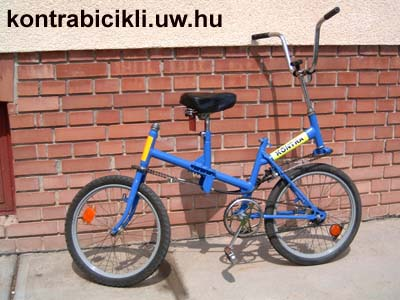
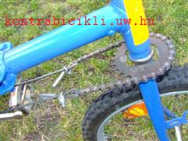
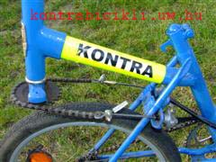

The priciple of this bike is slightly different from the usual ones since the first wheel is the driven one and the back wheel is the steered one. Steering works in the usuall way, by turning the handlebar to one side or the other. The difference is that the back wheel turns to the opposite direction driving also works the usual way bypushing the pedals forward the bike moves forward.
By pushing the pedals backwards the coaster-brake is activated. The handlebar drives the fork through a transmission made of two cogwheels and a bowden wire. This construction steers the back wheel in the opposite direction compared to the direction of the handlebar. Yet the bike follows the command of the handlebar.

The main driving chain-wheel was moved from one side to the other of the frame, which implies a reversed driving direction. The driven wheel should be mounted reversed, on the oposite side as well, while riding a normal bike the rider can regain balance by moving the handlebar.

Initially, trying to ride this bike seems impossible as the rider tries to use the elementary riding skills. In the case of this bike this reflex causes an even greater loss of balance because of the sudden movement of the rear wheel.